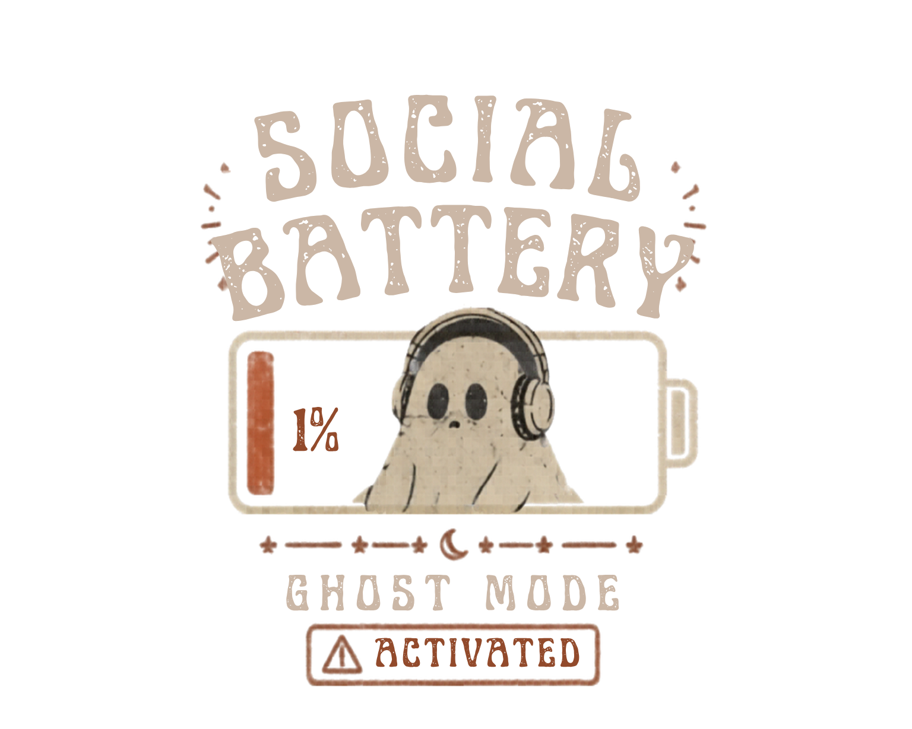

Washed crop
Cropped · Faded Black · In the making
A boxy washed crop, with five masks across the front and a plain back.
WELCOME TO SABI STUDIO
The curious you. The worn-out you.The you that’s always felt a little different.
I’m just starting my design business, with familiar feelings finding their way onto clothes. Everything is printed to order for now. Have a look around. You might find a little of yourself here.

Clothes are for everyone. So are the feelings behind these designs. Whether you recognise yourself in them or simply like what you see, you’re welcome here.
GET TO KNOW THE DESIGNS
Things to wear. Art to keep.
A few familiar feelings, in different forms.
01 / I WEAR MY MASK ALL YEAR ROUND
A little dark humour, with space for whatever it means to you. The same illustration finds its way onto clothes, a bag, and art you can keep close.
Cropped · Faded Black · In the making
A boxy washed crop, with five masks across the front and a plain back.
Full length · Black · In the making
A roomy, full-length tee for the days you want a little more space.
Full length · Black · In the making
A gently shaped, full-length tee, with the same five masks and familiar words.
Relaxed fit · Deep Black · In the making
Dropped shoulders, a hood without drawcords, and the masks sitting just above the pocket.
Mask collection · In the making
Take the masks along. Black canvas, shoulder-length handles and space for your everyday things.
6 × 4 inches · With envelope · In the making
A small piece of SABI for your desk, a shelf, or a note to someone who gets it.
Landscape · Unframed · In the making
A little more room for the details. The complete illustration on smooth matte paper.
These pieces are still in the making. The clothing and tote previews show the planned print placements, and the art prints show the artwork. I’ll check the finished colours, print and fit before orders open.
02 / SOCIAL BATTERY 1%
Headphones on. Ghost mode activated. A familiar feeling, in four everyday forms. Meet the first selection: a roomy tee, a warm hoodie, a substantial tote and a shorter washed crop.
Black · Core range · In the making
Headphones on. Ghost mode activated. A roomy black tee for a familiar feeling.
Deep Black · Core range · In the making
A little space, a little warmth, and a ghost who gets it.
Black · Core range · In the making
For the everyday things. The ghost comes along too.
Faded Black · Alternative silhouette · In the making
A quieter ghost on a heavier, 240gsm cotton crop. The washed finish gives the black a faded, lived-in feel.
Printed to order in the UK. These previews show the planned designs and placements. I’ll check the finished colours, print and fit before orders open.
THE PERSON BEHIND SABI
For much of my life, I’ve tried to be invisible. I’ve lived with chronic illness and, for a long time, being neurodivergent without knowing it. So much of it felt like a mystery.
It’s frightening to be seen when you’ve felt judged so often. There’s the risk of intense embarrassment, racism, and feeling like you can’t do what other people do. I kept trying, but I felt quite alone. Like everyone else had the manual to life, and I just didn’t have it.
Over the past two years, I’ve been building my business. It started with operations and admin, then grew into CV writing, websites and practical support. I’ve been learning new skills and more about supporting people without judgment. Because it’s not always easy, and we all struggle with different things.
Sometimes you don’t even know what the problem is. You just know you’re struggling. Having to find someone to help can feel like another battle.
Through all of this, I’ve started to think: maybe I don’t want to be invisible. Maybe I want to be seen for who I am, and for all the things I can do.
These designs are part of that. Running low on social battery, wearing a mask, finding my own way. Things I haven’t always known how to explain. I hope someone sees something familiar in them and feels a little less alone.
You don’t need a particular label or diagnosis to connect with them. If you recognise the feeling, or simply like the design, there’s room for you here.
I’m still learning and building.Sam x
HOW I’M STARTING
For now, everything is printed to order. That means I can start without buying stock upfront. It does cost more to make each item this way, so I’m keeping prices as low as I reasonably can while choosing products I feel good about selling.
If little sales start to come in, I’d love to buy small batches of the designs people enjoy, keep them here and send them out myself. If that brings my costs down, my aim is to pass those savings on.
I want SABI to be affordable and accessible. Clothes are for everyone. So are the feelings I hope to convey through these designs.
FROM THE SKETCHBOOK
One of the ideas taking shape in the studio: a journey from A to B, with a wonderfully unnecessary detour. Mushrooms, a ruined arch, a sign pointing to “WHAT IF?”
Sometimes the interesting part is everything you notice along the way.
An idea in progress“A mind that finds interesting things everywhere.”
From Sam’s Scenic Route design briefTHE DETAILS MATTER TOO
A lovely design is only part of it.
You need to know how it will feel on you.
Fabric, texture, stretch and where the print sits. “Soft” means different things to different people, so we want to give you details you can actually use.
Measurements to compare with something you already like wearing. A size label on its own can only tell you so much.
The weight of the fabric and how it layers. A heavyweight hoodie and a cropped tee do very different jobs.
We’re checking these details for each launch garment. They’ll be on the product pages before you can order. If there’s something particular you need to know, ask Sam.
A FEW HELPFUL THINGS
If you’d rather ask a person, you can.
Say hello to SamNo. The designs grow out of neurodivergent experience, but you don’t need a diagnosis or an explanation to enjoy them. If something feels like you, or you simply like it, you’re welcome.
Not quite. This is a preview while the first collection is being prepared. I’m checking the finished products and final details before orders open.
Each piece will be printed to order by the print partners I’ve chosen for the range. The clothing and totes will be printed in the UK. I’ll explain how long making and delivery take before you order.
We’re finalising those details. Delivery costs, time estimates and the returns policy will be available before the shop opens, so you can read them before deciding.
Email info@sabigroup.co.uk with the piece you’re interested in and what you’d like to know. We’ll tell you what we know and what still needs checking.